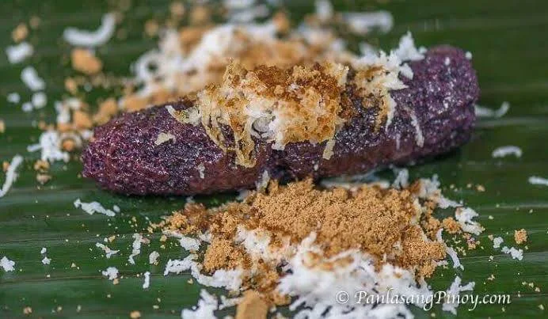

Description
Puto bumbong is a traditional Filipino steamed rice cake known for its distinct purple color and soft, chewy texture. It is commonly served warm with butter, grated coconut, and muscovado sugar, especially during the Christmas season.
Recipe Information
| Preparation Time | Cooking Time | Servings | Difficulty |
|---|---|---|---|
| 20 minutes | 15-20 minutes | 4 people | Moderate |
Ingredients
- 2 cups glutinous rice flour
- ½ cup rice flour
- 1 cup water, or as needed
- ½ teaspoon purple food coloring or ube flavoring
- 2 tablespoons butter or margarine
- 1 cup freshly grated coconut
- ½ cup muscovado or brown sugar
- Banana leaves, for serving
Instructions
- Combine the glutinous rice flour and rice flour in a mixing bowl.
- Gradually add the water and purple food coloring or ube flavoring. Mix until the dough becomes slightly moist and crumbly.
- Pass the mixture through a sieve to create fine rice granules.
- Prepare a steamer and place the rice mixture in small heat-safe molds or containers.
- Steam for about 15–20 minutes or until the rice cakes are fully cooked and firm.
- Carefully remove the puto bumbong from the molds and arrange them on banana leaves.
- Brush with butter or margarine, then top with grated coconut and muscovado sugar before serving.
Video Tutorial
Here's a quick and easy tutorial on how to make a simple but delicious puto bumbong.
Recipe Feedback
Send us a feedback if our puto bumbong recipe fits your taste!